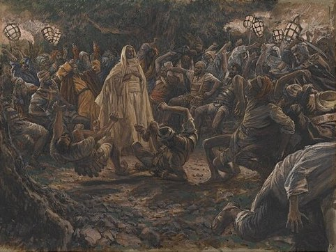
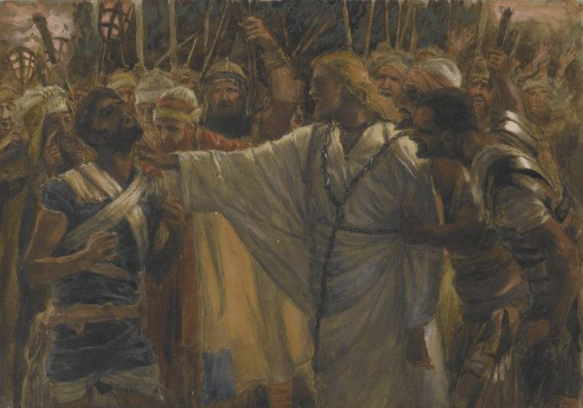
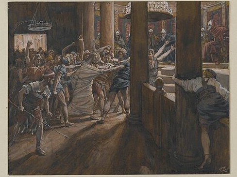
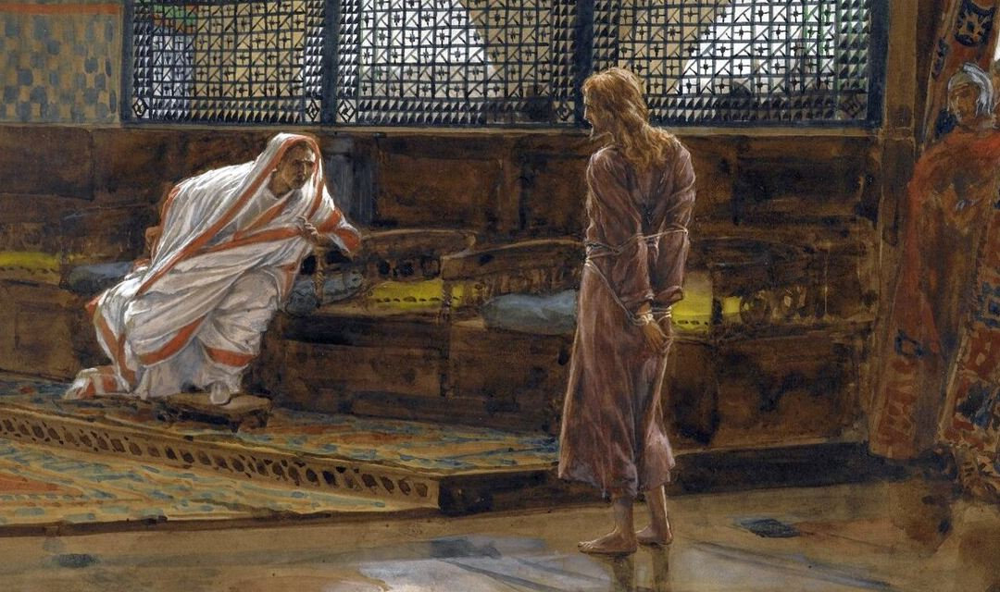

John 18
The King on trial
Jesus steps forward to meet the men who came to arrest him. Peter warms himself at the wrong fire. And Pilate asks “What is truth?” with the Truth standing right in front of him.
Things to watch for
Keep these questions in the back of your mind as we read. We'll come back to every one of them at the end.
- Who Jesus isWhat happened when Jesus said, “I am he”?
- His choiceWas Jesus a victim, or did he go willingly?
- FailureHow did Peter fall, and was that the end of his story?
- His kingdomWhat kind of king is Jesus?
- TruthWhat is truth, and where do we find it?
- In our placeWhat does Barabbas show us about what Jesus did for us?
Part one
In the garden
Verses 1–11
They came to take him by force. He walked out to meet them.
One long night
After the supper and the prayer of chapter 17, Jesus leads his men out of the city, down across the brook Kidron, to an olive garden he used often (v. 2).
Judas knew the place. Jesus knew he knew. He went there anyway.
Arrested and bound, he is marched back across the valley to the high priest's house.
By early morning he stands before Pilate, the Roman governor (v. 28).
Torches to find the Light
“A band of men” is speira, the word for a cohort of Roman soldiers, several hundred men at full strength. With them came the temple police sent by the chief priests. That's a small army for one unarmed teacher and eleven tired men.
Passover always fell at the full moon. They still brought lanterns and torches, as if he might hide in the dark.
He didn't hide. The One who said “I am the light of the world” (John 8:12) was about to walk straight out to them.

They went backward
Jesus doesn't wait to be found. “Knowing all things that should come upon him,” He steps out and asks, “Whom seek ye?”
One short sentence, and the whole armed crowd stumbles backward and hits the ground.
No one in that garden captured Jesus. He let them take him. That's the first thing John wants you to see about the cross.
“I am”
In Greek, Jesus says just two words: egō eimi, “I am.” The King James translators added “he” to make the English read smoothly, and printed it in italics to show it was added.
“And God said unto Moses, I AM THAT I AM: and he said, Thus shalt thou say unto the children of Israel, I AM hath sent me unto you.”
Exodus 3:14
He had said it before: “Before Abraham was, I am” (John 8:58). In the garden, the name of God came out of his mouth, and grown soldiers couldn't stay on their feet.
Take me. Let them go.
Even while he's being arrested, Jesus is protecting his men. He steps between them and the soldiers and makes the trade: me for them.
That's the whole night in one sentence. Before the cross ever happens, Jesus is already standing in someone else's place.
And he keeps every one the Father gives him: “Of them which thou gavest me have I lost none.” He said the same about everyone who believes:
“And I give unto them eternal life; and they shall never perish, neither shall any man pluck them out of my hand.”
John 10:28

Peter's sword, Jesus' cup
Peter swings for a head and gets an ear. Brave, and completely wrong. Luke, the doctor, tells us what Jesus did next:
“And Jesus answered and said, Suffer ye thus far. And he touched his ear, and healed him.”
Luke 22:51
Jesus didn't need a sword. He told Peter he could ask the Father for “more than twelve legions of angels” (Matthew 26:53). A Roman legion was about 6,000 soldiers.
The “cup” is the suffering, and the judgment for our sin, that the Father had put in his hands. An hour earlier he had prayed about it in this very garden. Now he picks it up and drinks it, on purpose, for us.
Part two
Two men on trial
Verses 12–27
Inside, Jesus stands firm. Outside, by a fire, Peter caves.
The family business
So they take Jesus to the old man first. The real decisions ran through Annas.
John reminds us what Caiaphas had already said: “it was expedient that one man should die for the people” (see 11:50). He meant, “Better one man dies than Rome comes down on all of us.” God meant something far bigger: one Man would die in the place of the people. Caiaphas preached the gospel without knowing it.
John cuts between two scenes
Watch how John tells it, like a film cutting back and forth between a courtyard and a room.
Outside, by the fire
Inside, before the high priest
Inside, Jesus tells the truth and gets hit for it. Outside, Peter lies to stay comfortable. Same hour, two men, two very different nights.
The wrong fire
Peter didn't plan to deny Jesus. He just got cold, and drifted over to the fire where the men who arrested his Lord were standing. A few minutes later, he was one of them.
John uses the word for a charcoal fire only twice in his whole book: here, and on the beach after the resurrection, where Jesus cooks Peter breakfast and gives him three chances to undo three denials. Watch for that fire. Jesus was planning Peter's comeback before Peter ever fell.

Hit, and still in control
The high priest is fishing for something to charge him with. Jesus says, “I've taught in public all along. Ask the people who heard me.” A guard slaps him across the face for it.
Notice what Jesus does. He doesn't hit back. He doesn't curse. He doesn't go quiet and swallow it, either. He calmly names the wrong: “If I said something evil, prove it. If not, why hit me?”
“Who, when he was reviled, reviled not again; when he suffered, he threatened not; but committed himself to him that judgeth righteously:”
1 Peter 2:23
If your temper has run your life, here's a different way to be a man: steady, truthful, and leaving the payback to God. The Spirit who lives in you can grow that in you.
“I am” and “I am not”
The fall wasn't the end
Jesus had told him exactly this would happen: “The cock shall not crow, till thou hast denied me thrice” (John 13:38). Luke tells us what came next:
“And the Lord turned, and looked upon Peter. And Peter remembered the word of the Lord, how he had said unto him, Before the cock crow, thou shalt deny me thrice. And Peter went out, and wept bitterly.”
Luke 22:61–62
“But I have prayed for thee, that thy faith fail not: and when thou art converted, strengthen thy brethren.”
Luke 22:32
If you've relapsed, or gone back on something you swore you'd never do again, this is your story too. Jesus knew about Peter's fall before it happened, prayed for him ahead of time, and already had a job waiting for him on the other side of it. Peter's worst night was not his last word.
Part three
Before Pilate
Verses 28–40
The judge asks the questions. The prisoner is the one in charge.
Six hearings in a few hours
Put the four Gospels side by side and Jesus stands before six hearings between the arrest and the cross. John tells us about the ones marked.
Before the Jewish leaders, at night
- Annas18:13, 19–24John
- Caiaphas18:24; Matthew 26:57John
- The councilat daybreak, Luke 22:66
Before Rome, in the morning
- Pilate18:28–38John
- HerodLuke 23:7–11
- Pilate again18:39–19:16John
Six hearings, and not one honest charge stuck. The Jewish leaders could condemn, but under Rome they couldn't execute (v. 31). So they had to bring him to the governor.
Careful about the wrong things
What they were careful about
A Gentile's doorway
Stepping into a Roman's house would make them ceremonially “unclean” and keep them from the Passover meal. So they stood outside.
What they weren't careful about
An innocent man's life
They had just arranged, by night, to have him killed.
And here's the part they missed: they were so busy protecting their Passover that they handed over the real Passover Lamb. “Behold the Lamb of God, which taketh away the sin of the world” (John 1:29).
Religion can keep every rule and still miss God standing in front of it. Watch for that in yourself.
He said how he would die
The Jewish way
The penalty for blasphemy (Leviticus 24:16). They had tried to stone him twice already (8:59, 10:31).
The Roman way
Crucifixion. Only Rome could order it, and only Rome did it.
“And I, if I be lifted up from the earth, will draw all men unto me. This he said, signifying what death he should die.”
John 12:32–33
By handing him to Pilate, his enemies made sure the very death Jesus had predicted came true. Nobody in this story is running it but God.
A different kind of King
Pilate's question is political: “Are you a rebel king? Should Rome worry about you?” Jesus' answer: yes, I'm a King, but not the kind you're thinking of.
The kingdoms of this world
Won by force
Soldiers fight to keep their king out of enemy hands. Power comes from swords, money, and Caesar.
The kingdom of Jesus
Won by truth
His servants didn't fight for him. He rules hearts, not borders. His subjects are the ones who hear his voice.
“Not of this world” doesn't mean he's not King here. It means his authority doesn't come from here. Pilate thinks he's judging a would-be king. He's standing in front of the real one.

What is truth?
Pilate asks it and walks out of the room without waiting for an answer. Maybe he was sneering. Maybe he really didn't know. Either way, he turned his back on the one Man who could tell him.
“Jesus saith unto him, I am the way, the truth, and the life: no man cometh unto the Father, but by me.”
John 14:6
Truth isn't just an idea to argue about. It's a Person. Addiction runs on lies: “just this once,” “I can handle it,” “nobody gets hurt.” The way out starts by listening to his voice instead.
Barabbas walks free
Pilate's way out was a Passover custom: free one prisoner. He offered them Jesus. They chose Barabbas, a robber who, Mark tells us, had committed murder in an uprising (Mark 15:7).
The crosscondemned
The door outreleased
Then they trade places. The guilty man walks out. The innocent One goes to the cross.
Here's the strange part: Bar-abbas means “son of the father.” Every one of us is Barabbas. Guilty, set free, because the true Son of the Father took our place.
“For Christ also hath once suffered for sins, the just for the unjust, that he might bring us to God, being put to death in the flesh, but quickened by the Spirit:”
1 Peter 3:18
Points to remember
- Who Jesus is“They went backward, and fell to the ground” 18:6He spoke God's own name, “I am,” and an armed crowd went down.
- His choice“The cup which my Father hath given me, shall I not drink it?” 18:11Nobody caught Jesus. He gave himself up, on purpose, for us.
- Failure“Peter stood with them, and warmed himself” 18:18Peter fell by drifting to the wrong fire. Jesus already had his comeback planned.
- His kingdom“My kingdom is not of this world” 18:36He is a real King, ruling by truth, not swords.
- Truth“Every one that is of the truth heareth my voice” 18:37Truth is a Person. Don't walk out on him the way Pilate did.
- In our place“Not this man, but Barabbas” 18:40The guilty went free and the innocent One died. That's what he did for you.
Question 1 of 6
Who Jesus isWhat happened when Jesus said, “I am he”?
What verses tell us about this?
“Jesus said unto them, Verily, verily, I say unto you, Before Abraham was, I am.”
John 8:58
“And God said unto Moses, I AM THAT I AM: and he said, Thus shalt thou say unto the children of Israel, I AM hath sent me unto you.”
Exodus 3:14
Answer
The soldiers and officers went backward and fell to the ground. In Greek, Jesus simply said “I am,” the name God gave Moses at the burning bush. For one moment the men who came to arrest him felt who they were dealing with: God in the flesh.
Question 2 of 6
His choiceWas Jesus a victim, or did he go willingly?
What verses tell us about this?
“Thinkest thou that I cannot now pray to my Father, and he shall presently give me more than twelve legions of angels?”
Matthew 26:53
Answer
He went willingly. He knew everything that was coming, and he walked out to meet it. He could have called down thousands of angels. Instead he told Peter to put the sword away and drank the cup the Father gave him. The cross wasn't something that happened to Jesus. It was something he chose, for us.
Question 3 of 6
FailureHow did Peter fall, and was that the end of his story?
What verses tell us about this?
“But I have prayed for thee, that thy faith fail not: and when thou art converted, strengthen thy brethren.”
Luke 22:32
“He saith unto him the third time, Simon, son of Jonas, lovest thou me? Peter was grieved because he said unto him the third time, Lovest thou me? And he said unto him, Lord, thou knowest all things; thou knowest that I love thee. Jesus saith unto him, Feed my sheep.”
John 21:17
Answer
He drifted. He followed at a distance, got cold, and stood at the enemy's fire, and then the lies came easy. But it wasn't the end. Jesus had prayed for him beforehand, and after the resurrection he met Peter at another charcoal fire, gave him three “I love thee”s for three denials, and put him back to work.
Question 4 of 6
His kingdomWhat kind of king is Jesus?
What verses tell us about this?
Answer
A real King, born for it, but his kingdom doesn't come from this world or run on its methods. He doesn't rule by swords or votes. He rules the hearts of the people who hear his voice and follow him.
Question 5 of 6
TruthWhat is truth, and where do we find it?
What verses tell us about this?
“Jesus saith unto him, I am the way, the truth, and the life: no man cometh unto the Father, but by me.”
John 14:6
Answer
Truth is a Person: Jesus himself. He came to bear witness to the truth, and the people who belong to the truth listen to his voice. Pilate asked the right question and then walked away from the answer. Don't do that. Keep listening to him in his word.
Question 6 of 6
In our placeWhat does Barabbas show us about what Jesus did for us?
What verses tell us about this?
“For Christ also hath once suffered for sins, the just for the unjust, that he might bring us to God, being put to death in the flesh, but quickened by the Spirit:”
1 Peter 3:18
Answer
Barabbas was guilty and deserved the cross. Jesus was innocent, and Pilate said so. Yet the guilty man walked free and the innocent One died in his place. That's the gospel: “the just for the unjust.” We are all Barabbas, and Jesus took our place.
Prayer requests
What can we pray about for you today?
“The LORD is nigh unto them that are of a broken heart; and saveth such as be of a contrite spirit.”
Psalm 34:18